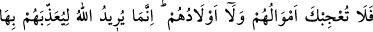
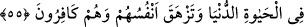
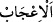

Ahmağın, metin kimseye sirayeti çok çabuk olur;
Kor, küle konulur da alevi söner.
Mesnevî’de denir ki:
Binlerce istekli kişi olsa, bir de usanmış kişi
Elçi, elçilik yapmak istemez, gönlü soğur
Onların huzurunda iki kat eğilmedikçe
O emaneti nasıl olur da sana verirler?
55. Onların ne malları ne de evlatları seni imrendirmesin. Allah, bunlarla onlara
dünya hayatında azab etmeyi ve kâfir olarak canlarının çıkmasını istiyor.
“Onların” münâfıkların “ne malları ne de evlatları seni imrendirmesin.”
“  (imrenmek)”, güzelliğine şaşırarak bir şeyi beğenmek demektir.
Kâşifî der ki: “Bu ifâdenin mânâsı sizi şaşkınlığa düşürmesin, demektir. Hitap Hz.
Peygamber (a.s.)’a olmakla birlikte murad ümmettir. Müminlere şöyle buyurur: Sizi
şaşkınlığa sevketmesin.
Onların malları, kendi aleyhlerine bir yüktür; mühlet vererek kendilerini yavaş yavaş
azaba yaklaştırma vâsıtasıdır. Nitekim âyetin devamında şöyle buyurulmuştur: “Allah,
bunlarla onlara dünya hayatında azâb etmeyi…”
“Bunlar” zamîri ile çocuklar değil mallar kastedilmektedir. Buna göre mânâ şu
şekildedir: Allah, onlara mallarını biriktirirken yorgunlukla, onları muhafaza ederken
korkuyla ve bu malları Allah yolunda harcamayı hoş görmemekle azâb etmeyi istiyor.
“Bunlar” zamîrinin, hem mallar hem de çocukların yerine kullanılmış olması da
mümkündür. Çünkü evlatları da onların dünyada azab görmesine sebep olur. Şöyle ki,
şayet çocukları yaşasa, usûlü (anne-babaları vs.) onları yetiştirme, yiyecek içecek ve
giyecekleri şeyleri temin etme zorluklarıyla karşılaşacaklardır. Şayet çocukları ölse,
onlardan ayrılma hasretiyle sıkıntı ve azap çekeceklerdir. Çünkü sevilenden ayrılmak
insana çok üzüntü verir.
Fakir (Bursevî) der ki: “Anne-babanın katlandığı bu yorgunluk ve hasrette mümin de
kâfir de müşterektir. Öyleyse bunu kâfire tahsis etmenin mânâsı nedir?” dersen, ben
derim ki: Evet (durum öyledir) ancak bu konuda mümin daha hafif bir yorgunluk ve
hasret çeker. Çünkü o iman sahibidir. Âhiret sevabını umut ederek sıkıntılara karşı sabır
gösterir. Bu yüzden çocukları yetiştirme konusunda çektiği sıkıntı ve onlardan ayrılma
hasreti öbürüne nisbetle sanki yok gibidir.